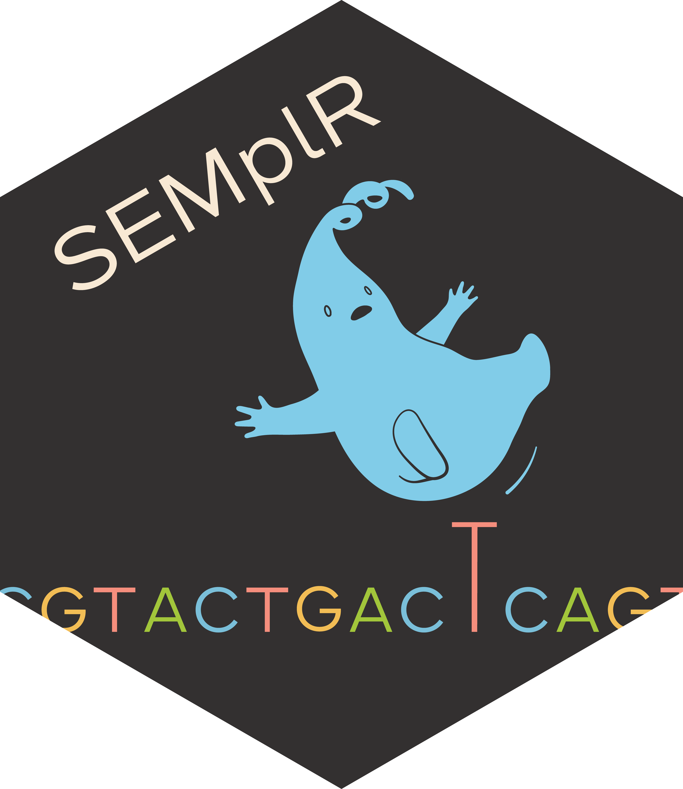

SEMplR 
SEMplR (SNP Effect Matrix Pipeline in R) is an R package for predicting transcription factor binding and the effect of genetic variation on transcription factor binding.
Please see the vignette for a more detailed example workflow. Below are some examples of basic usage.
Installation
devtools::install_github("grkenney/SEMplR")Basic Usage
SEMplR uses SNP Effect Matrices (SEMs) generated by SEMpl to score DNA sequences. A default set of 223 SEMs is included with the package, or a custom set can be supplied. The default SEM collection can be loaded with:
data(sc)The metadata for this collection can be viewed with semData(sc) and individual SEMs can be accessed with the sems accessor:
sems(sc, semId = c("AP2B_HUMAN.SK-N-SH", "ZSCAN4_secondary"))Predicting transcription factor binding
Scoring transcription factor binding.
gr <- GenomicRanges::GRanges(seqnames = c("chr12", "chr19"),
ranges = c(94136009, 10640062),
allele = c("G", "T"))
result <- scoreBinding(gr,
semList = sc,
bs_genome_obj = BSgenome.Hsapiens.UCSC.hg19::Hsapiens)Predicting effect of genetic variation on transcription factor binding
Scoring both alleles of genetic variants for transcription factor binding.
vr <- VRanges(seqnames = c("chr12", "chr19"),
ranges = c(94136009, 10640062),
ref = c("G", "T"), alt = c("C", "A"))
sempl_obj <- scoreVariants(vr = vr,
semList = sc,
bs_genome_obj=BSgenome.Hsapiens.UCSC.hg38::Hsapiens)The resulting object contains three slots that can be accessed with the variants(), semData(), and scores() accessor functions.